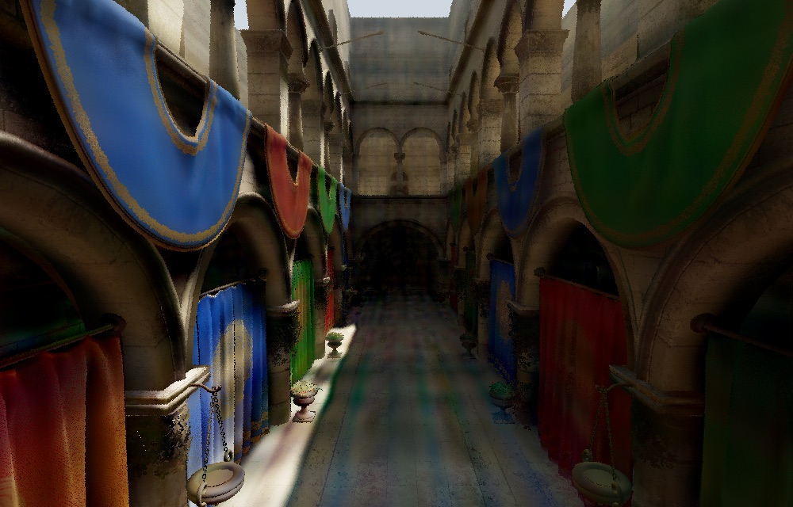
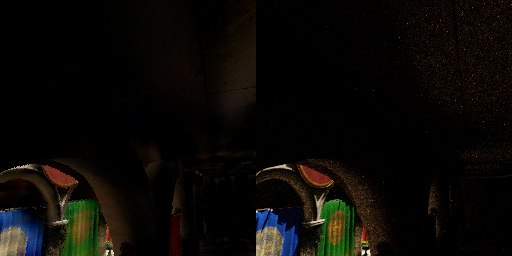
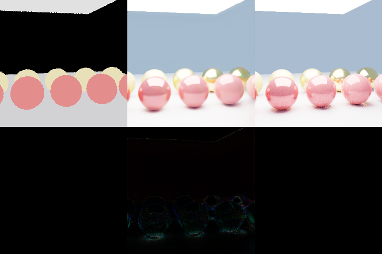
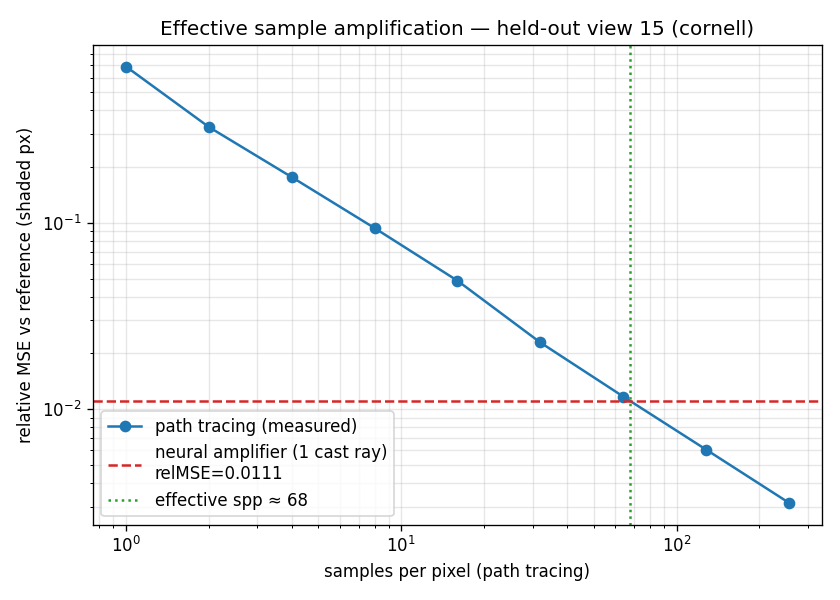

A path tracer is honest and slow: to get a clean pixel it casts hundreds of random light paths and averages them, fighting Monte-Carlo noise the whole way. But the geometry a pixel sees - where the ray landed, the surface normal, the albedo - is cheap, recoverable from a single primary ray, the same deferred G-buffer a rasteriser already produces for free. The expensive part is the light transport: bounces, shadows, sky, colour bleed. So here's the bet of this project: can a small neural network learn that light transport as a function of the cheap G-buffer - and can it run fast enough to matter? On the Crytek Sponza atrium, the answer turned out to be an ~11,000-parameter MLP that shades the scene with full global illumination at 64 FPS, running entirely on the GPU inside a Metal compute kernel.

The bet: shading is the expensive part, so learn only the shading
Real-time rendering has spent two decades on a clean idea called deferred shading: rasterise the scene once into a "G-buffer" of per-pixel surface attributes - position, normal, material - then compute lighting as a screen-space pass over that buffer. The first stage is cheap and the lighting stage is where you spend your budget. Path tracing inverts the economics: there is no cheap stage, because every pixel pays for many stochastic bounces.
Neural rendering offers a third option. Keep the cheap deferred G-buffer - but replace the hand-written lighting pass with a network that has learned what the converged, globally-illuminated result looks like for this scene. The network never has to learn geometry (the G-buffer hands it that); it only has to learn the scene's light transport integral as a function of position, normal and albedo. That is a much smaller thing to learn, and - the part I cared about - it can be small enough to run in the render loop.
Ground truth first: a from-scratch Metal path tracer
You cannot train or honestly measure neural shading without a reference renderer, so the project started as a real hardware-accelerated path tracer written entirely on Apple Metal - GGX microfacet BRDFs, next-event estimation with multiple importance sampling, a full bidirectional integrator, all riding the M-series ray-tracing units through MTLAccelerationStructure. It renders Cornell, a PBR material showcase, and the textured 262k-triangle Sponza scene. Crucially, it does double duty as a data factory: it can export, for any camera, the per-pixel G-buffer alongside a high-sample converged image. "Held-out" throughout this post means camera views the network never saw during training - the only honest test of whether it learned the scene rather than memorised pixels.
Result 1 - a neural shader that runs inside the render loop
The realtime path is a deliberately tiny per-pixel MLP. For each shaded pixel it takes nine numbers - the shading normal, the textured albedo, and the scene-normalised hit position - lifts the position with a 4-band Fourier feature encoding (the same trick NeRF uses to let a small network represent high-frequency spatial detail) to 33 inputs, and runs them through 33 → 64 → 64 → 64 → 3 GELU layers to a log-radiance colour. That is about 11,000 parameters - small enough to print.
The reason it is per-pixel and not convolutional is the whole point: a per-pixel function ports directly to a Metal compute kernel with one GPU thread per pixel. Training (in PyTorch, on the Mac's MPS backend) writes the standardisation statistics and weight matrices into a flat shader.bin; the Swift renderer reads it straight into MTLBuffers, and a kernel called neuralShadeInst evaluates the network in-line during rendering. No PyTorch at render time, no round-trip to the CPU, no path-traced bounces - the shading is the GPU forward pass.

On held-out frames of a Sponza camera orbit it reaches 27.0 dB tonemapped PSNR, and it runs at 64 FPS - 15.6 ms/frame at 1000×640 on an Apple M4. Reproducing it is three commands: export a dataset, train, then render in Metal.
# 1) export a textured G-buffer + converged-target sequence along a camera orbit
./.build/release/pathtracer --exportseq --scene sponza --width 480 --height 300 \
--frames 48 --targetSpp 128 --bounces 6 --clamp 8 --out research/data_sponza
# 2) train the per-pixel MLP and bake the Metal weights (shader.bin)
python3 research/neural_shader.py --data research/data_sponza --out research/results_neural
# 3) shade Sponza in realtime, entirely in Metal - interactive window or headless PNG + FPS
./.build/release/pathtracer --neural research/results_neural/shader.bin --scene sponza --windowResult 2 - a screen-space U-Net for spatial context
A per-pixel network has one structural blind spot: it sees a single hit and nothing around it, so it cannot reason about anything that depends on a neighbourhood - contact shadows that bleed across surfaces, sharp lighting gradients, edges. The convolutional counterpart fixes that. A compact U-Net (three down/up levels with skip connections, GroupNorm + GELU, ~845k parameters) reads the G-buffer as a full screen-space image and regresses log-radiance, free to look at spatial context. On held-out views of the material-showcase scene it reaches 32.3 dB - a clear step up in fidelity over the per-pixel model.

[ albedo (a G-buffer input) | U-Net prediction | path-traced reference ]. Bottom: the per-pixel error. The U-Net reconstructs convincing global illumination - soft shadows, indirect bounce light, the area-light highlight - from inputs that contain no lighting at all.The trade is the obvious one: a convolutional network does not collapse into a one-thread-per-pixel Metal kernel as cleanly, so for now the U-Net runs in PyTorch/MPS. To still drive it interactively, the Metal renderer can act as a resident G-buffer server (pathtracer --gbufserver): it holds the acceleration structure, streams a fresh primary-ray G-buffer per camera in milliseconds, and a small Python viewer feeds each one to the U-Net. You orbit; the network shades. It is the spatial-context, higher-quality sibling of the in-Metal MLP - and the prerequisite for the next piece.
Result 3 - temporal stability with motion vectors
Shade each frame independently and the image shimmers under camera motion, because the network makes slightly different errors every frame. The standard cure, borrowed from temporal anti-aliasing and temporal denoisers, is history: reproject the previous output into the current frame using per-pixel motion vectors (a backward warp that asks "where was this surface last frame?") and let the network blend that warped history with the current G-buffer. The renderer already exports the motion vectors alongside the G-buffer, so the temporal model is the same U-Net with three extra input channels for the warped previous frame. We score it two ways on a held-out arc of the orbit: PSNR against the reference, and a motion-compensated flicker metric measured against a no-history ablation of the identical network - isolating exactly what the temporal feedback buys.
A neat property falls out of measuring honestly: the path-traced reference itself flickers, because it is Monte-Carlo and still has residual noise. So "temporal stability" is graded against a moving target, and the motion-vector history has to beat the no-history version of the same weights - not a strawman.
Where it began: amplifying samples, not replacing them
The project actually started from the inverse question. Before "replace shading entirely," I asked the softer version: can a network amplify a single sample? Cast one ray, keep its 1-spp (noisy) radiance plus its G-buffer, and have an MLP predict the converged multi-sample radiance - a learned radiance cache, in the spirit of NVIDIA's Neural Radiance Caching. On the Cornell box it lifts a 13.4 dB single-sample image to 28.1 dB.
The result I am proudest of there is not the number but how it was measured. Instead of assuming error falls as 1/√N and back-solving an "effective sample count," I rendered the held-out view as 256 independent 1-spp images, prefix-averaged them to trace the true Monte-Carlo convergence curve, and found where path tracing's error actually crosses the network's:
1 spp path tracing relMSE = 0.687
256 spp path tracing relMSE = 0.0031
neural (1 cast ray) relMSE = 0.0111 -> ~67.6 path-traced samples
1/N line in log-log is the path tracer's real error as samples accumulate; the network's single-ray error lands where ~68 honestly-traced samples would - and the clean line independently validates that the tracer's estimator is unbiased.So on that unseen view, one physically cast ray plus inference is worth about 68 path-traced samples. Same philosophy as the deferred-shading work - exploit the cheap signal a single ray gives you - pointed at a slightly different target.
The numbers, side by side
| Network | Scene | Params | Held-out PSNR | Runtime |
|---|---|---|---|---|
| Per-pixel MLP (in Metal) | Sponza | ~11k | 27.0 dB | 64 FPS · 15.6 ms @ 1000×640, M4 |
| Screen-space U-Net | showcase | ~845k | 32.3 dB | PyTorch/MPS (live via G-buffer server) |
| Radiance amplifier | Cornell | ~288k | 28.1 dB | ≈ 68 path-traced samples / ray |
PSNR is tonemapped, on camera views held out of training. The three rows are different scenes and tasks, so the dB figures are not directly comparable - they each answer a different question.
Takeaways
Deferred shading is the natural seam for neural rendering. Splitting "what the camera sees" (cheap, exact, one ray) from "how it is lit" (expensive, learnable) means the network never wastes capacity on geometry. It learns only the light transport - and that is small enough to be fast.
Tiny beats clever when the budget is the render loop. An 11k-parameter MLP is laughable by modern standards, but because it is per-pixel it becomes a one-thread-per-pixel Metal kernel and shades a full atrium at 64 FPS with zero bounces. Architecture that fits the hardware substrate beat architecture that maximised a validation metric. The U-Net is sharper, but the MLP is the one that runs inside the renderer.
It is per-scene, and that is fine. Like Neural Radiance Caching, each network is trained on one scene's geometry and lighting and generalises across held-out camera views of that scene - not across scenes. Re-training per scene is the deployment model, not a bug; it is what makes the network small enough to be realtime.
Measure against the real curve, not a convenient assumption. The most reusable lesson had nothing to do with networks: holding out camera views, rendering an independent convergence stack instead of assuming 1/√N, and ablating the exact same weights are what turn "looks good" into a number you can defend. And none of it exists without building the honest ground-truth renderer first.
The renderer, all three networks, the Metal kernels and the data-export pipeline are on GitHub: brennengreen/metal-pathtracer. It builds with the Swift Command Line Tools - no Xcode - and compiles its Metal shaders at runtime, so the whole thing is swift build -c release and go.